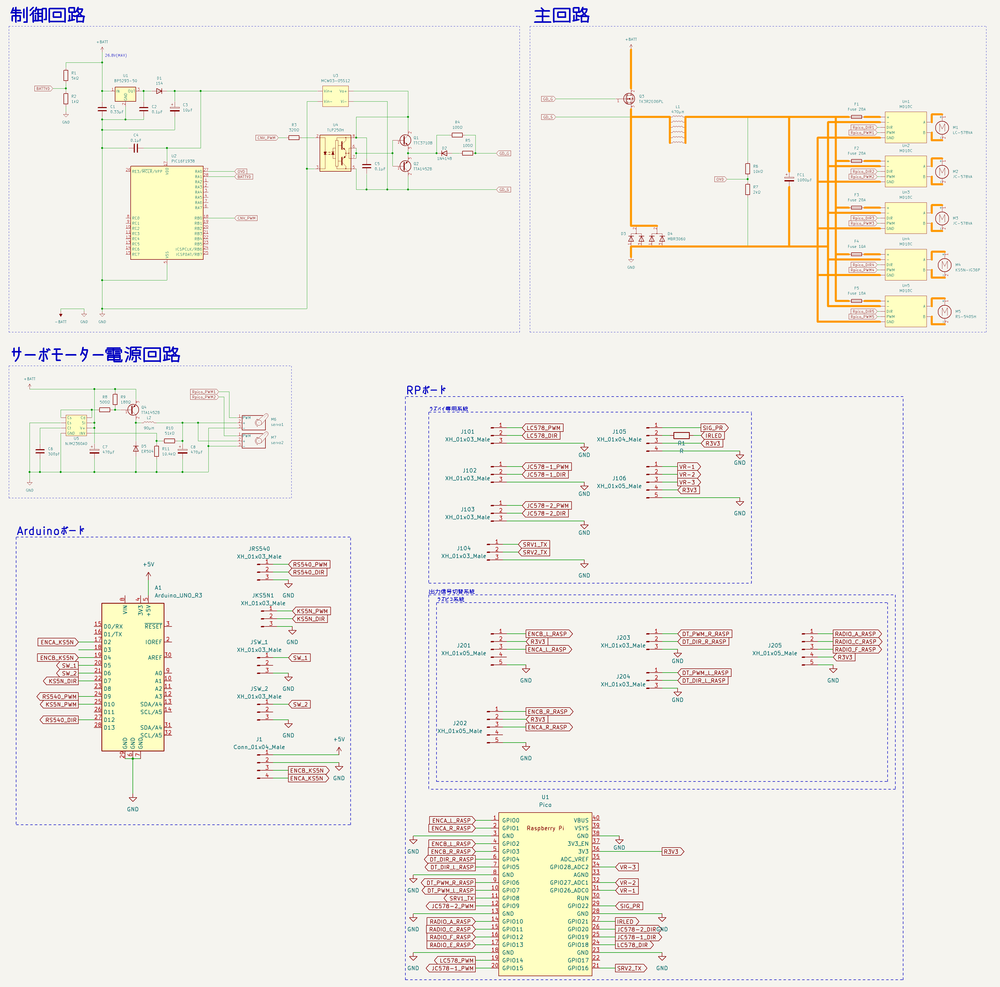
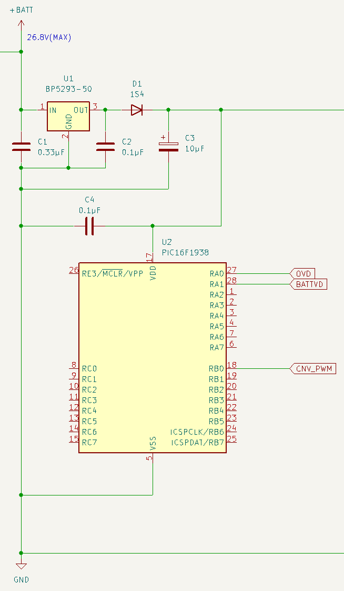

| 名称 |
MIRS2405 エレクトロニクス詳細設計書 |
| 番号 |
MIRS2405-ELEC-0001 |
| 版数 |
最終更新日 |
作成 |
承認 |
改訂記事 |
| A01 |
2024.9.1 |
宇佐見祥 |
|
初版 |
目次
本ドキュメントはMIRS2405 𝔊𝔘𝔏𝔏ℭのエレクトロニクス詳細設計書である。
全体の接続図をfig.1に示す。

fig.1 全体接続図
モバイルバッテリーでRaspberryPi pico、Raspberry Pi、Jetsonへの電源供給をし、
LiFePOバッテリーはモーターと降圧コンバータ制御回路の電源供給を行う。
各項目でそれぞれの回路の動作を解説する。
全体の回路図をfig.2に示す。

fig.2 全体回路図
電源回路の出力は、2系統となる。
7.4V系 : サーボモーター
12V系 : パワーウィンドウモータ・その他直流モーター
電源の回路図をfig.3に示す。
fig.3 電源回路図
電源回路は大きく分けて、マイコン部、ゲートドライブ回路部、7.4V電源部、12V電源部の四つの要素からなる。
回路図をfig.4に示す。

fig.4 マイコン電源部回路図
NJM7805を使用し5Vを供給する。
また、この5Vを絶縁型DCDCコンバータの入力にも使用する。
回路図をfig.5に示す。
fig.5 電圧測定部回路図
LiFePOバッテリーの両端子に分圧抵抗を接続する。
BATTVD端子をPICマイコンのアナログピンに接続し、バッテリー電圧を監視する。
バッテリー電圧が低すぎる場合は降圧コンバータの出力を切る。
回路図をfig.6に示す。

fig.6 降圧コンバータ部回路図
電源の入力はLiFePOバッテリーである。
出力にはモータードライバを接続し、12Vを供給する。
出力側には分圧抵抗を接続し、OVD端子電圧をPICマイコンのADコンバータから過電圧検出を行う。
検出電圧を用いて出力が12V一定になるように制御し、任意設定の閾値を超えた場合は出力を切る。
ゲート制御はPICマイコンで行う
SBDは4パラで使用する。
平滑コイルも定格電流の関係から6パラで使用する。
回路図をfig.7に示す。

fig.7 サーボ電源回路図
NJM2360ADを使用した降圧DCDCコンバータ回路である。
出力電圧7.4V、最大出力電流は5Aとしている。
回路図をfig.8に示す。
fig.8 ゲートドライブ回路図
Nch-MOSFETをハイサイドで駆動するため、フローティング電源を用いる。
ゲート制御信号はフォトカプラで絶縁され、ターンオン時は12V、ターンオフ時は0Vをゲートに印加する。
ゲート抵抗は絶縁型DCDCコンバータの出力電流の制約からターンオン時は100Ω、ターンオフ時は50Ωとなるようにしている。
電源回路の制御にはPIC16F1938を使用する。
使用するI/Oと機能をtable.1に示す。
table.1 PICマイコンI/O
| ピン番号 |
入出力 |
機能 |
| RA0 |
IN |
OVD入力 |
| RA1 |
IN |
BATTVD入力 |
| RB0 |
OUT |
降圧コンバータゲート信号出力 |
Raspberry Pi picoの回路図をfig.xに示す。
fig.x Raspberry Pi pico
RaspberryPIの回路図をfig.xに示す。
fig.x RaspberryPI
Jetson Nanoの回路図をtable.xに示す。
fig.x Jetson Nano回路図
使用物品をtable.5に示す。
table.5 使用物品
| 物品名 |
個数 |
備考 |
サイトURL |
| Nch-パワーMOSFET TK3R2E06PL |
1 |
120円 |
販売ページ |
MIRS DATABASE